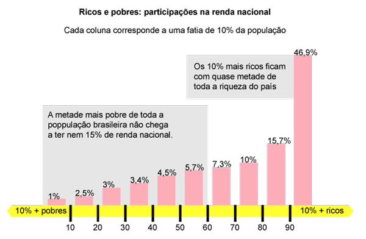
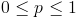

Veja um trecho de uma matéria de jornal:
Pesquisas recentes do IBGE – Instituto Brasileiro de Geografia e Estatística – coletaram informações sobre a renda mensal das famílias do país. Os dados estão representados no histograma abaixo.
A comparação desses dados com os de outros países mostra que o Brasil está entre as piores distribuições de renda. Para montar o ranking de distribuição de renda comparou-se a porcentagem da renda total do país que fica com a metade mais pobre da população.
O Brasil tem apenas 14,4% da renda nacional com metade da população. Isto é, a outra metade, mais rica, detêm 85,6% de toda a renda!
Note que essa matéria ilustra um uso interessante de quantis. O quantil p, com , é o valor da amostra abaixo do qual estão os (100.p)% dos dados.
A população está dividida em fatias de 10%, ou seja, em quantis 0,1. Com as informações da participação na renda nacional de cada um dos quantis 10% da população pode-se analisar várias situações, por exemplo, mais de 60% da renda nacional está com a fatia dos 20% mais ricos.